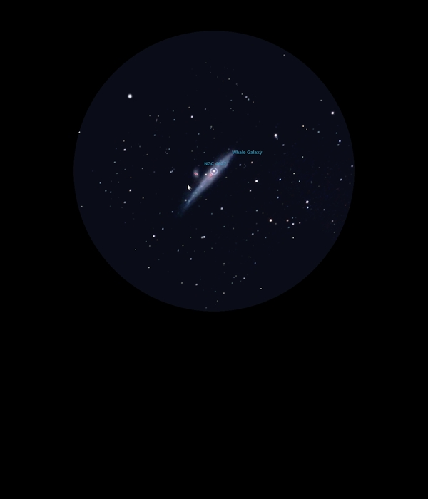

NGC 4631
Barred Spiral Galaxy in Canes
Venatici
NGC 4631
Mag 9.8
The Whale Galaxy, Caldwell 32
25/03/17
The Whale Galaxy
I can see why it's called The Whale Galaxy, a curving hazy
blob, bright and distinct with a curving shape to it
Easy to locate using HIP 61320 and HIP 61309 at Mags 6.20 and
5.40 to locate